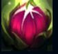

Zyra
| Zyra The Aspect of Twilight | |
|---|---|
| Release date | 24.07.2012 |
| Class | Catcher |
| Positions | Support |
| Resource | Mana |
| Range type | Ranged |
| Adaptive type | Magic |
| Base statistics | |||
| Health | 504 – 1847 | Mana | 418 – 843 |
| Health regen. | 5.5 – 14 |
Mana regen. | 13 – 19.8 |
| Armor | 29 – 80 | Attack damage | 53 – 107.4 |
| Magic resist. | 30 – 38.5 | Crit. damage | 175% |
| Move. speed | 340 | Attack range | 575 |
Zyra, născută în urma unei catastrofe magice demult uitate, este mânia întruchipată a naturii – o combinație atrăgătoare de plantă și femeie, care seamănă viață la fiecare pas. Pentru ea, muritorii din Valoran nu reprezintă decât pradă pentru progeniturile ei, așa că îi ucide fără remușcări în rafale de spini. Deși încă nu și-a anunțat adevăratele intenții, Zyra cutreieră lumea-n lung și-n lat, răsfățându-și instinctul primar de a coloniza teritorii noi și de a elimina toate celelalte forme de viață. | GRĂDINA SPINILOR Periodic, în jurul Zyrei apar semințe. Cu cât crește în nivel, cu atât semințele cresc mai repede. Când Zyra folosește ''Spini ucigași'' sau ''Rădăcini lacome'' lângă semințe, din acestea cresc plante, care luptă pentru Zyra. |
|||
|---|---|---|---|---|
SPINI UCIGAȘI Liane groase cresc prin pământ și explodează într-o ploaie de spini care le provoacă inamicilor din zonă daune magice. Dacă abilitatea este folosită lângă o sămânță, din aceasta crește un ''Scuipător de spini'', care lovește inamicii de la distanță. |
||||
 |
CREȘTERE SĂLBATICĂ Zyra plantează o sămânță care dispare după maximum 60 de secunde. ''Spinii ucigași'' și ''Rădăcinile lacome'' folosite în apropierea semințelor le vor transforma în plante care luptă pentru Zyra. Zyra poate stoca mai multe semințe în același timp. Când ucide un inamic, timpul de reîncărcare al ''Creșterii sălbatice'' scade. |
|||
| RĂDĂCINI LACOME Zyra trimite plante agățătoare prin pământ pentru a-și prinde ținta, provocând daune și țintuind inamicii care le ies în cale. Dacă ''Rădăcinile lacome'' sunt folosite lângă o sămânță, vor crea un ''Lansator de vițe'', ale cărui atacuri pe rază scurtă reduc viteza de mișcare a inamicilor. |
||||
SPINI SUFOCANȚI Zyra invocă un desiș încâlcit în locația-țintă, care le provoacă daune inamicilor pe măsură ce se extinde și îi aruncă în aer când se contractă. Plantele din desiș se înfurie și atacă mai rapid. |